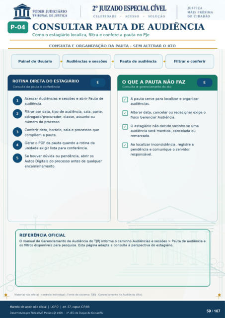

Transcrição automática em português, ainda não revisada. Confira grafia, prazos e termos jurídicos na imagem e no PDF antes de utilizar.
CONSULTAR PAUTA DE AUDIÊNCIA
Como o estagiário localiza, filtra e confere a pauta no PJe
CONSULTA E ORGANIZAÇÃO DA PAUTA - SEM ALTERAR O ATO
Painel do Usuário Audiências e sessões
Pauta de audiência Filtrar e conferir
ROTINA DIRETA DO ESTAGIÁRIO
Consulta da pauta e confeóncia Acessar Audiências e sessões e abrir Pauta de
audiência. Filtrar por data, tipo de audiência, sala, parte,
advogado/procurador, classe, assunto ou número do processo.
Conferir data, horário, sala e processos que compõem a pauta.
Gerar o PDF da pauta quando a rotina da unidade exigir lista para conferência.
Se houver dúvida ou pendência, abrir os Autos Digitais do antes de qualquer
encaminhamento.
REFERÊNCIA OFICIAL
O QUE A PAUTA NÃO FAZ
Consulta gerenciamento do ato A pauta serve para localizar e organizar
audiências. Alterar data, cancelar ou redesignar exige o
fluxo Gerenciar Audiência. O estagiário não decide sozinho se uma
audiência será mantida, cancelada ou remarcada.
AO localizar inconsistência, registre a pendência e comunique o servidor
responsável. O manual de Gerenciamento de Audiência do TJRJ informa o caminho Audiências e sessões > Pauta de audiência e
os filtros disponíveis para pesquisa. Esta página adapta a consulta à perspectiva do estagiário. Material não oficial - controle individual I Fonte de sistema: TJRJ - Gerenciamento de Audiência (PJe).
Ver também o infográfico original (página 59)
